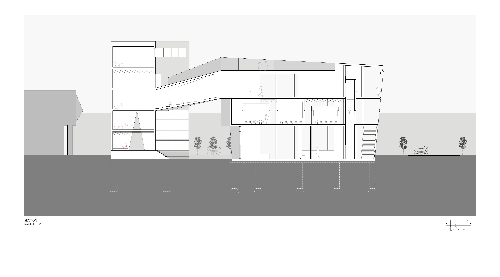

centre:
new media art
Studio Elaboration II Jeremy Ficca, Jennifer Lucchino
ABOUT
East Liberty is a developing neighborhood in Pittsburgh. There are new commercial and retail spaces being introduced to the community, but there still remain lots of undeveloped spaces. There is a distinct division at South Beatty St. which separates built infrastructure from the empty parking lots. To help influence the development of East Liberty as a whole, movement plays a large role in bringing people around the neighborhood. The site of the proposed urban incubator and stimulator serves as an intersection of built and unbuilt spaces. to facilitate activites and movement around the area, the centre features an outdoor public plaza and angled facades to attract people from all directions. To further emphasize of intersection and unity, the third floor offers an exhibition space that is open to the incubator offices to allow people to interact [incubator and stimulator].
Illustration Board Spatial Model [1'=1/16" scale]
Study Model [1'=1/32" scale]

Line Drawings

Atmospheric Collages and Renders